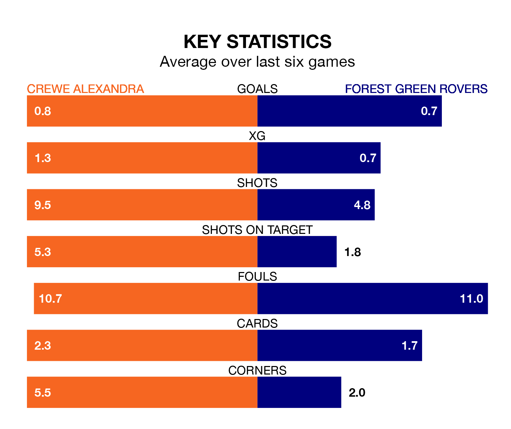

Forest Green Rovers make the journey to the Mornflake Stadium to play Crewe Alexandra on Monday looking to pick up points to end their three-game losing streak.
Forest Green's struggles have left them with six points from their last six EFL League Two matches, while their opponents have earned five from a possible 18.
Forest Green are bottom of the table after 40 games, of which they have won eight and drawn nine, earning 33 points.
Crewe are 18 places ahead of Rovers in sixth, with 18 wins and 12 draws putting them on 66 points.
With 38 goals in 40 games so far this season, the Green are the league's lowest scorers with 0.9 goals per game. And they are conceding more than average, letting in 68 goals at a rate of 1.7 per game.
The Railwaymen, meanwhile, are above average scorers, with 1.7 goals per game, compared to a league average of 1.5. They have conceded 1.4 goals per game.
In the last 10 years, Crewe and Forest Green have played each other on six occasions. Crewe won three of them, Forest Green two, and they drew once.
On average, the Railwaymen scored 2.2 goals and the Green 1.5 in those matches.
Their last meeting was on September 9, when Crewe won 4-1 away.
Crewe's last match was on Friday, a 0-0 draw against Gillingham.
Forest Green lost 3-0 against Stockport County last time out, also on Friday.
Monday's match will be refereed by Geoff Eltringham, who has taken charge of one EFL League Two game so far this season, issuing no red cards and booking four players. He has awarded one penalty.
He is yet to oversee a match featuring either Crewe or Forest Green this season.
Updated: 10:31 (UTC), 31/03/24